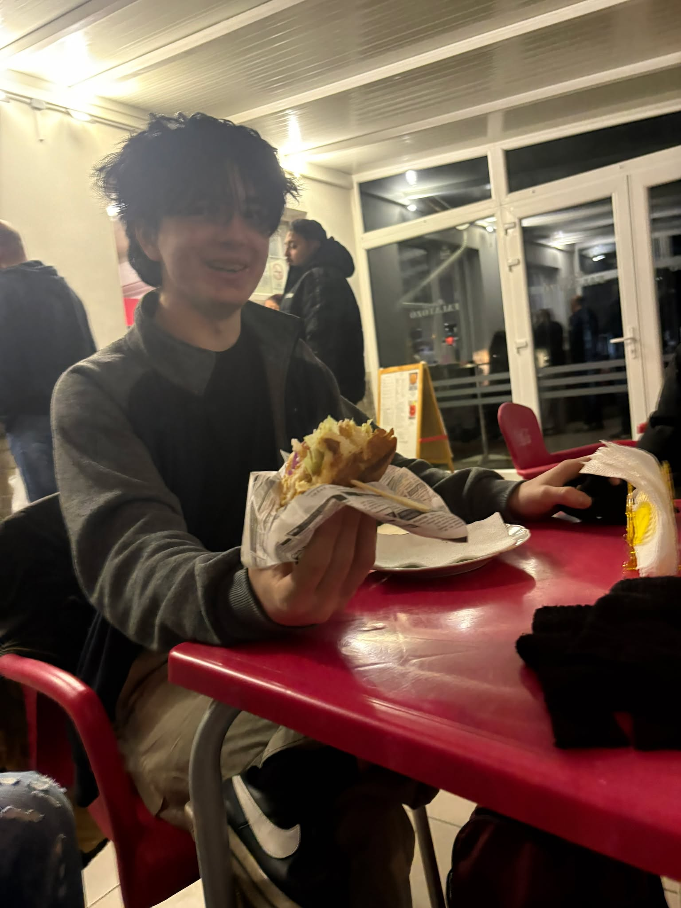
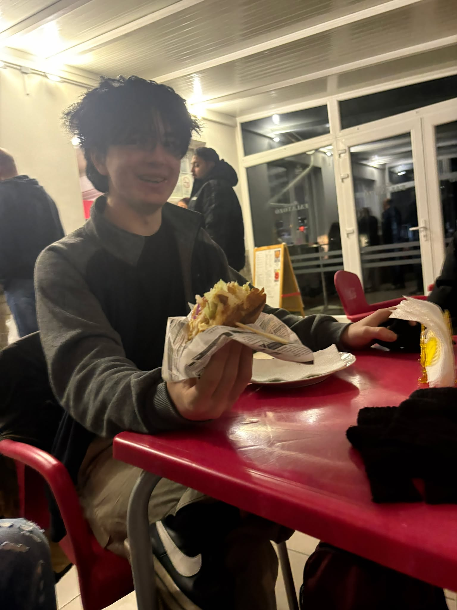

|
Személyes adatokNév: Matejcsik GabiNem: Férfi? Születési hely: Taktaharkány Születési idő: annó 90-ben Állampolgárság: satacon Kedvenc zenéje: |
Története:Matejcsik Gabi – vagy ahogy a környéken tisztelettel suttogják: „A Taktaharkányi Rejtély, Aki Anno ’90-ben Született, De Már Akkor Is Készen Állt” – egy egészen különös figura, akinek már a megjelenése is azt sugallja: ő tud valamit, amit mások nem. Születési hely: Taktaharkány A legenda szerint Gabi születése napján a falu összes utcai lámpája egyszerre kezdett vibrálni. Nem azért, mert elektromos hiba volt – hanem mert érezte a rendszer, hogy új karakter érkezett a világba. A bába állítólag így szólt: „Ez a gyerek nagy dolgokra lesz hivatott… vagy legalábbis sokat fog mosolyogni gyanúsan.” Anno ’90-ben – de milyen ’90-ben? A dokumentum ezt a misztikus megfogalmazást használja: "anno 90-ben" Ez többféle történelmi értelmezést is enged: lehet 1990, lehet 1890, vagy akár 90 után, amikor a rómaiak már kezdtek unni mindent. A helyiek szerint Gabi kortalan, és valójában időn kívül létezik, mint egy kedvenc kabát, amit évek óta hordasz, és még mindig jó. Satacon állampolgár Ez egy különösen titokzatos hely. Azt mondják, Satacon egy párhuzamos dimenzió, ahol mindenki kabátban jár, és senki sem kérdezi meg, miért. Gabi itt kapta az állampolgárságát, miután egyszer fél perc alatt behajtogatta a buszmenetrendet origamiba. A gyanús mosoly mestere A képen látható karakter mosolya olyan, mintha: épp most talált volna ki valami csínyt, vagy tudna egy titkot, amit senki más, vagy már harmadszor kérdezték meg tőle, „ugye nem csináltál semmit?”, és ő nemmel felelt… de közben nagyon is csinált valamit. A mellékszereplő képek tanulsága A további fotók alapján Gabi legalább három formában képes létezni: A kabátos, rejtélyes főhős A pólós, váratlanul jókedvű figura A „nézem a kasszát, de tudom, hogy valami nincs rendben” üzemmód A „telefonálok, de közben figyellek” alteregó Ez a sokoldalúság teszi őt a Satacon multiverzum egyik legfélelmetesebb karakterévé. |
Kapcsolódó körözések |